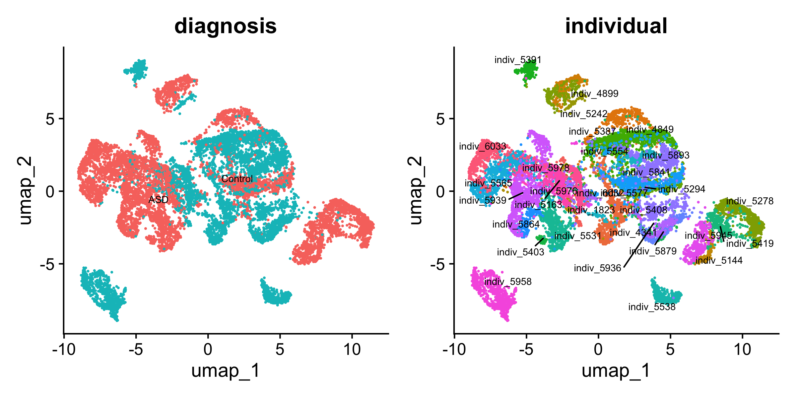

Neuron preprocessing for eSVD-DE tutorial
Kevin Z. Lin
2026-09-30
Source:vignettes/articles/asd-preprocess.Rmd
asd-preprocess.RmdOverview
This article is written for eSVD2 version 1.2.0.
This article builds the Seurat object that the companion article Neuron
analysis for Layer 2/3 in ASD analyzes with eSVD-DE. It starts from
the public count matrix of Velmeshev et al. (2019) and ends with a
Seurat object of 13,302 Layer 2/3 neurons and 6,599 genes, saved as
asd_seurat.RData. The same file can be downloaded from Dropbox,
so this article is only needed if you want to see how it was made, or if
you cannot download it.
The heavy chunks below are not run when the site is built
(eval = FALSE); the printed output is pasted in from a run
on 2026-09-30 with eSVD2 1.2.0 and Seurat 5.5.1. That run reproduced the
2024 object exactly: the same cells, the same genes and the same counts,
so the file on Dropbox is unchanged.
| Stage | What it does | Functions |
|---|---|---|
| Read | Read the sparse matrix, gene symbols, barcodes and metadata |
Matrix::readMM(), utils::read.csv()
|
| Build | Create the Seurat object and keep the Layer 2/3 cluster |
Seurat::CreateSeuratObject(),
subset()
|
| Filter | Drop all-zero genes, cells with too many counts, genes with too many counts |
Matrix::colSums(), subset()
|
| Select genes | Union of variable genes, the paper’s L2/3 DEGs, housekeeping and SFARI genes |
Seurat::FindVariableFeatures(), the data sets shipped
with eSVD2
|
| Save and look | Save the object; PCA and UMAP for a picture |
save(), Seurat::RunUMAP(),
Seurat::DimPlot()
|
Downloading the data
The data can be downloaded from https://cells.ucsc.edu/autism/rawMatrix.zip.
After unzipping rawMatrix.zip you get four files:
-
barcodes.tsv: 104,559 rows (cells) and 1 column, the cells’ barcodes -
genes.tsv: 65,217 rows (genes) and 2 columns, the Ensembl ID and the gene symbol -
matrix.mtx: a sparse matrix with 65,217 rows and 104,559 columns and about 238 million non-zero counts (3.3 Gb as text) -
meta.txt: 104,559 rows (cells) and 16 columns of covariates about each cell and donor
The original paper is Velmeshev et al. (2019).
Setting up in R
You will need Matrix, Seurat and
eSVD2 (for the three gene lists it ships). Point
data_dir at the unzipped folder.
Reading in the data
First, we read in the data. Reading the 3.3 Gb
matrix.mtx with Matrix::readMM() took about a
minute on a 2023 MacBook Pro (Apple M2 Max, 32 Gb RAM) and needs about
14 Gb of memory at its peak. There are 6,143 duplicated gene symbols;
for simplicity we keep the first occurrence of each.
mat <- Matrix::readMM(file.path(data_dir, "matrix.mtx"))
gene_mat <- utils::read.csv(file.path(data_dir, "genes.tsv"),
sep = "\t", header = FALSE)
cell_mat <- utils::read.csv(file.path(data_dir, "barcodes.tsv"),
sep = "\t", header = FALSE)
metadata <- utils::read.csv(file.path(data_dir, "meta.txt"),
sep = "\t", header = TRUE,
stringsAsFactors = TRUE)
metadata$individual <- factor(paste0("indiv_", metadata$individual))
rownames(mat) <- gene_mat[, 2]
colnames(mat) <- cell_mat[, 1]
# remove duplicates
if(any(duplicated(rownames(mat)))){
mat <- mat[-which(duplicated(rownames(mat))), ]
}
dim(mat)
rownames(metadata) <- metadata$cell
metadata <- metadata[, setdiff(colnames(metadata), "cell")]
colnames(metadata)[1] 59074 104559
[1] "cluster" "sample"
[3] "individual" "region"
[5] "age" "sex"
[7] "diagnosis" "Capbatch"
[9] "Seqbatch" "post.mortem.interval..hours."
[11] "RNA.Integrity.Number" "genes"
[13] "UMIs" "RNA.mitochondr..percent"
[15] "RNA.ribosomal.percent"Creating the Seurat object
Next, we create the Seurat object and keep only the cells in the
Layer 2/3 cluster, 13,324 cells. (We abbreviate this Seurat object as
asd, for Autism Spectrum Disorder.)
asd <- Seurat::CreateSeuratObject(counts = mat,
meta.data = metadata)
asd <- subset(asd, cluster == "L2/3")
asd[["percent.mt"]] <- Seurat::PercentageFeatureSet(asd, pattern = "^MT-")
asdAn object of class Seurat
59074 features across 13324 samples within 1 assay
Active assay: RNA (59074 features, 0 variable features)
1 layer present: countsPreprocessing the Seurat object
We then do basic preprocessing: remove the genes with no counts at
all in these cells (21,105 of them), remove the cells with too many
counts (22 cells with 60,000 or more), then remove the genes with too
many counts (100 genes whose mean log1p count is above
log1p(10)). After these three filters 37,869 genes and
13,302 cells remain.
We then gather the genes we want eSVD-DE to analyze: the 5,000 most
variable genes, the DEGs that Velmeshev et al. reported for L2/3 neurons
(velmeshev_gene_df, 99 present), the housekeeping genes
(housekeeping_df, 944 present) and the SFARI autism genes
(sfari_df, 1,056 present). The union, minus the
mitochondrial genes, is 6,599 genes, which we set as the variable
features and subset to.
Once this is done, we are ready to perform the eSVD-DE analysis (in the other article).
set.seed(10)
mat <- SeuratObject::LayerData(asd, layer = "counts", assay = "RNA")
mat <- Matrix::t(mat)
# remove genes with all 0's
gene_sum <- Matrix::colSums(mat)
if(any(gene_sum == 0)){
features <- SeuratObject::Features(asd)
features <- setdiff(features, names(gene_sum)[which(gene_sum == 0)])
asd <- subset(asd, features = features)
}
# remove cells with too high counts
keep_vec <- rep(TRUE, length(Seurat::Cells(asd)))
keep_vec[asd$nCount_RNA >= 60000] <- FALSE
asd[["keep"]] <- keep_vec
asd <- subset(asd, keep == TRUE)
# remove genes with too high counts
mat <- SeuratObject::LayerData(asd, layer = "counts", assay = "RNA")
mat <- Matrix::t(mat)
gene_total <- Matrix::colSums(log1p(mat))
gene_threshold <- log1p(10) * nrow(mat)
features <- colnames(mat)[which(gene_total <= gene_threshold)]
asd <- subset(asd, features = features)
asdAn object of class Seurat
37869 features across 13302 samples within 1 assay
Active assay: RNA (37869 features, 0 variable features)
1 layer present: counts
# find the variable genes
asd <- Seurat::NormalizeData(asd)
asd <- Seurat::FindVariableFeatures(asd,
selection.method = "vst",
nfeatures = 5000)
data("velmeshev_gene_df", package = "eSVD2")
de_genes <- velmeshev_gene_df[velmeshev_gene_df[, "Cell type"] == "L2/3",
"Gene name"]
data("housekeeping_df", package = "eSVD2")
hk_genes <- housekeeping_df[, "Gene"]
data("sfari_df", package = "eSVD2")
sfari_genes <- sfari_df[, "gene.symbol"]
gene_keep <- unique(c(
de_genes,
hk_genes,
sfari_genes,
Seurat::VariableFeatures(asd)
))
rm_idx <- grep("^MT", gene_keep) # remove mitochondrial genes
if(length(rm_idx) > 0) gene_keep <- gene_keep[-rm_idx]
gene_current <- SeuratObject::Features(asd)
gene_keep <- intersect(gene_current, gene_keep)
Seurat::VariableFeatures(asd) <- gene_keep
asd <- subset(asd, features = Seurat::VariableFeatures(asd))
asd
table(asd$individual, asd$diagnosis)An object of class Seurat
6599 features across 13302 samples within 1 assay
Active assay: RNA (6599 features, 6599 variable features)
2 layers present: counts, data ASD Control
indiv_1823 0 72
indiv_4341 0 733
indiv_4849 428 0
indiv_4899 349 0
indiv_5144 202 0
indiv_5163 0 145
indiv_5242 0 81
indiv_5278 944 0
indiv_5294 449 0
indiv_5387 0 1129
indiv_5391 0 237
indiv_5403 69 0
indiv_5408 0 162
indiv_5419 327 0
indiv_5531 631 0
indiv_5538 0 391
indiv_5554 0 233
indiv_5565 881 0
indiv_5577 0 215
indiv_5841 451 0
indiv_5864 275 0
indiv_5879 0 278
indiv_5893 0 976
indiv_5936 0 193
indiv_5939 1016 0
indiv_5945 422 0
indiv_5958 0 826
indiv_5976 0 106
indiv_5978 264 0
indiv_6032 0 289
indiv_6033 528 0With this done, we save this minimal Seurat object for the eSVD-DE article. The file is roughly 96 Mb.
save(asd, date_of_run, session_info, file = "asd_seurat.RData")Two of the metadata columns are redundant. In these cells each capture batch (
Capbatch) lies within one sequencing batch (Seqbatch), and each capture batch comes from one brain region (region: the ACC cells are exactly capture batches CB3, CB4, CB8 and CB9). Indicators for all three variables are therefore collinear, andeSVD2::initialize_esvd()refuses such a design by name. The analysis article adjusts forCapbatchalone, which spans the same column space.
Visualizing the data
It is nice to visualize any dataset before we do any analysis, and eSVD-DE is no different. Hence, we do some simple processing and draw a UMAP colored by diagnosis and by individual.
set.seed(10)
asd <- Seurat::ScaleData(asd, features = Seurat::VariableFeatures(asd))
asd <- Seurat::RunPCA(asd,
features = Seurat::VariableFeatures(object = asd),
verbose = FALSE)
set.seed(10)
asd <- Seurat::RunUMAP(asd, dims = 1:30, seed.use = 10)
p1 <- Seurat::DimPlot(
asd,
reduction = "umap",
group.by = "diagnosis",
label = TRUE,
repel = TRUE,
label.size = 2.5
) + Seurat::NoLegend()
p2 <- Seurat::DimPlot(
asd,
reduction = "umap",
group.by = "individual",
label = TRUE,
repel = TRUE,
label.size = 2.5
) + Seurat::NoLegend()
p1 + p2
UMAP of the L2/3 neurons, colored by diagnosis (left) and by individual (right)
What we glossed over
- The duplicated gene symbols are resolved by keeping the first row of each symbol; nothing checks which Ensembl ID that is.
-
The count thresholds (60,000 counts per cell, a
mean
log1pcount oflog1p(10)per gene) are the ones used for the tutorial, not the ones of the paper; the paper’s processed data set differs from this one. -
Cell-level quality control beyond these two
thresholds (mitochondrial fraction, doublets) is not done here;
percent.mtis computed and stored but not used.
References
- Velmeshev, D., Schirmer, L., Jung, D., Haeussler, M., Perez, Y., Mayer, S., … & Kriegstein, A. R. (2019). Single-cell genomics identifies cell type-specific molecular changes in autism. Science, 364(6441), 685-689. doi:10.1126/science.aav8130
- Lin, K. Z., Qiu, Y., & Roeder, K. (2024). eSVD-DE: cohort-wide differential expression in single-cell RNA-seq data using exponential-family embeddings. BMC Bioinformatics, 25, 113. doi:10.1186/s12859-024-05724-7
Setup
The following is the R session in which this page was built. The
website is built by GitHub Actions, so this is the session of that build
machine, not of the run on 2026-09-30 (eSVD2 1.2.0, Seurat 5.5.1) whose
output is pasted in above. Every chunk that does the preprocessing has
eval = FALSE, so the packages it uses do not appear
below.
## R version 4.6.1 (2026-06-24)
## Platform: x86_64-pc-linux-gnu
## Running under: Ubuntu 24.04.5 LTS
##
## Matrix products: default
## BLAS: /usr/lib/x86_64-linux-gnu/openblas-pthread/libblas.so.3
## LAPACK: /usr/lib/x86_64-linux-gnu/openblas-pthread/libopenblasp-r0.3.26.so; LAPACK version 3.12.0
##
## locale:
## [1] LC_CTYPE=C.UTF-8 LC_NUMERIC=C LC_TIME=C.UTF-8
## [4] LC_COLLATE=C.UTF-8 LC_MONETARY=C.UTF-8 LC_MESSAGES=C.UTF-8
## [7] LC_PAPER=C.UTF-8 LC_NAME=C LC_ADDRESS=C
## [10] LC_TELEPHONE=C LC_MEASUREMENT=C.UTF-8 LC_IDENTIFICATION=C
##
## time zone: UTC
## tzcode source: system (glibc)
##
## attached base packages:
## [1] stats graphics grDevices utils datasets methods base
##
## loaded via a namespace (and not attached):
## [1] digest_0.6.39 desc_1.4.3 R6_2.6.1 fastmap_1.2.0
## [5] xfun_0.61 cachem_1.1.0 knitr_1.52 htmltools_0.5.9
## [9] rmarkdown_2.32 lifecycle_1.0.5 cli_3.6.6 sass_0.4.10
## [13] pkgdown_2.2.1 textshaping_1.0.5 jquerylib_0.1.4 systemfonts_1.3.2
## [17] compiler_4.6.1 tools_4.6.1 ragg_1.5.2 bslib_0.12.0
## [21] evaluate_1.0.5 yaml_2.3.12 otel_0.2.0 jsonlite_2.0.0
## [25] rlang_1.3.0 fs_2.1.0 htmlwidgets_1.6.4